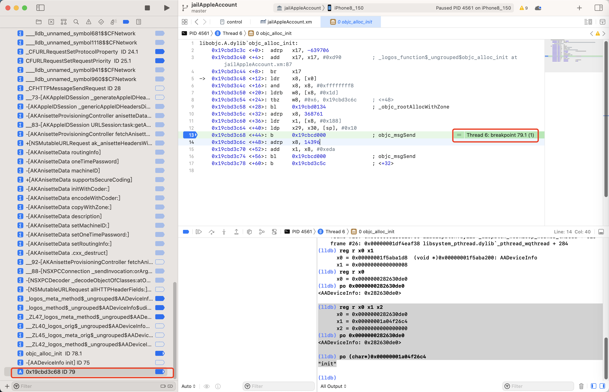

断点的条件判断表达式的写法的心得
关于条件判断的断点的表达式写法的心得：
要用正确的函数
- 条件判断语句：要用正确的函数
- 举例
objc_alloc_init- 其定义是
id objc_alloc_init(Class cls)
- 传入参数是
Class（而不是Instance） - 条件判断的写法
- 所以只能用，应该用：
NSStringFromClass- 定义：
NSString * NSStringFromClass(Class aClass);
- 定义：
- 而不应该用：
isKindOfClass- 定义：是针对
NSObject的- (BOOL)isKindOfClass:(Class)aClass;- 因为此时
$x0是个Class，不是Instance=Object
- 因为此时
- 定义：是针对
- 所以只能用，应该用：
- 所以结论是：objc_alloc_init的断点的条件判断
- 正确写法：
(bool)[NSStringFromClass($x0) isEqualToString: @"AADeviceInfo"] - 错误写法：
(bool)[$x0 isKindOfClass: (Class)objc_getClass("AADeviceInfo")]
- 正确写法：
- 其定义是
objc_alloc_init函数中的+44行的objc_msgSend- 背景
- 代码是
0x19cbd3c68 <+44>: b 0x19cbcd000 ; objc_msgSend- 
- 此时：
x0是AADeviceInfo的Instance=obj
- 代码是
- 条件判断的写法
- 所以不能用：
NSStringFromClass - 只能用
isKindOfClass - 结论
objc_alloc_init函数中的+44行的objc_msgSend的断点的条件判断- 正确写法：
(bool)[$x0 isKindOfClass: (Class)objc_getClass("AADeviceInfo")] - 错误写法：
(bool)[NSStringFromClass($x0) isEqualToString: @"AADeviceInfo"]
- 正确写法：
- 所以不能用：
- 背景
- 举例
最前面加bool类型转换
- 条件判断语句：往往最前面还要加个布尔类型强制转换（才能起到判断作用）
- 无效的写法：
[NSStringFromClass($x0) isEqualToString: @"AADeviceInfo"] [$x0 isKindOfClass: (Class)objc_getClass("AADeviceInfo")] - 有效的写法：
(bool)[NSStringFromClass($x0) isEqualToString: @"AADeviceInfo"] (bool)[$x0 isKindOfClass: (Class)objc_getClass("AADeviceInfo")]
- 无效的写法：
借助于lldb确认表达式语法无误
- 条件判断语句：当不确定代码是否正确时，可以借助于lldb命令行的po去执行，看看是否有语法错误
objc_alloc_init函数的条件判断表达式写法
当，不确定自己的写法，比如：
- objc_alloc_init 的断点的条件判断
[$x0 isKindOfClass: objc_getClass("AADeviceInfo")]
是否有误，可以去用po试试：
(lldb) po [$x0 isKindOfClass: objc_getClass("AADeviceInfo")]
error: expression failed to parse:
warning: <user expression 25>:1:2: receiver type 'unsigned long' is not 'id' or interface pointer, consider casting it to 'id'
[$x0 isKindOfClass: objc_getClass("AADeviceInfo")]
^~~
error: <user expression 25>:1:21: 'objc_getClass' has unknown return type; cast the call to its declared return type
[$x0 isKindOfClass: objc_getClass("AADeviceInfo")]
结果提示有误，意思是不清楚objc_getClass返回值的类型
所以后来才去加上Class的类型转换的
(bool)[$x0 isKindOfClass: (Class)objc_getClass("AADeviceInfo")]
此处再去执行，至少语法上是对的，不报错了：
(lldb) po [$x0 isKindOfClass: (Class)objc_getClass("AADeviceInfo")]
nil
所以确定，最后的正确写法是：
(bool)[$x0 isKindOfClass: (Class)objc_getClass("AADeviceInfo")]
objc_alloc_init的+44行汇编代码的条件判断表达式写法
对于：
libobjc.A.dylib`objc_alloc_init:
...
-> 0x19cbd3c68 <+44>: b 0x19cbcd000 ; objc_msgSend
的尝试添加条件判断的断点的过程：
(lldb) po (int)strcmp(class_getName($x0),"AADeviceInfo")==0
error: expression failed to parse:
error: <user expression 10>:1:13: 'class_getName' has unknown return type; cast the call to its declared return type
(int)strcmp(class_getName($x0),"AADeviceInfo")==0
^~~~~~~~~~~~~~~~~~
无法识别class_getName返回值类型，所以去加上类型转换
(lldb) po (int)strcmp((const char *)class_getName($x0),"AADeviceInfo")==0
error: Execution was interrupted, reason: EXC_BAD_ACCESS (code=1, address=0x4af7fbe24f30).
The process has been returned to the state before expression evaluation.
却又无法执行
(lldb) po class_getName($x0)
error: Execution was interrupted, reason: EXC_BAD_ACCESS (code=1, address=0x4af7fbe24f30).
The process has been returned to the state before expression evaluation.
继续尝试：
(lldb) po class_getName($x0)
error: Execution was interrupted, reason: EXC_BAD_ACCESS (code=1, address=0x4af7fbe24f30).
The process has been returned to the state before expression evaluation.
发现是class_getName函数无法正常执行
后来找到定义是：
const char * class_getName(Class cls);
-》所以此处是函数用法有误：
class_getName参数是Class，而此处是Instance，所以无法正常运行
换别的函数object_getClassName试试
(lldb) po [object_getClassName($x0) isEqualToString: @"AADeviceInfo"]
error: Execution was interrupted, reason: EXC_BAD_ACCESS (code=1, address=0x665444160).
The process has been returned to the state before expression evaluation.
却也无法运行，但另外发现：
(lldb) po object_getClassName($x0)
0x0000000197633c50
object_getClassName函数本身，是可以正常运行的
然后找到了定义：
const char * object_getClassName(id obj);
发现此处是：返回值是char *，而不是NSString *
所以要换用char *的判断逻辑
(lldb) po (char *)object_getClassName($x0)
"AADeviceInfo"
确保可以输出字符串后，然后换用strcmp去对比
(lldb) po strcmp(object_getClassName($x0),"AADeviceInfo")==0
error: expression failed to parse:
error: <user expression 16>:1:8: 'object_getClassName' has unknown return type; cast the call to its declared return type
strcmp(object_getClassName($x0),"AADeviceInfo")==0
^~~~~~~~~~~~~~~~~~~~~~~~
仍然报错，所以也要给object_getClassName加上返回值类型转换，才可以：
(lldb) po strcmp((char *)object_getClassName($x0),"AADeviceInfo")==0
error: expression failed to parse:
error: <user expression 17>:1:1: 'strcmp' has unknown return type; cast the call to its declared return type
strcmp((char *)object_getClassName($x0),"AADeviceInfo")==0
^~~~~~~~~~~~~~~~~~~~~~~~~~~~~~~~~~~~~~~~~~~~~~~~~~~~~~~
但是又报错strcmp返回值类型无法识别
所以也要加上类型转换
(lldb) po (int)(strcmp((char *)object_getClassName($x0),"AADeviceInfo")==0)
error: expression failed to parse:
error: <user expression 18>:1:7: 'strcmp' has unknown return type; cast the call to its declared return type
(int)(strcmp((char *)object_getClassName($x0),"AADeviceInfo")==0)
^~~~~~~~~~~~~~~~~~~~~~~~~~~~~~~~~~~~~~~~~~~~~~~~~~~~~~~
发现搞错了，int类型转换是需要针对于strcmp，而不是表达式
strcmp((char *)object_getClassName($x0),"AADeviceInfo")==0
所以int类型转换放在strcmp前面即可：
(lldb) po (int)strcmp((char *)object_getClassName($x0),"AADeviceInfo")==0
true
终于是，通过po辅助而确认了此处的断点的条件判断的正确写法是：
(int)strcmp((char *)object_getClassName($x0),"AADeviceInfo")==0